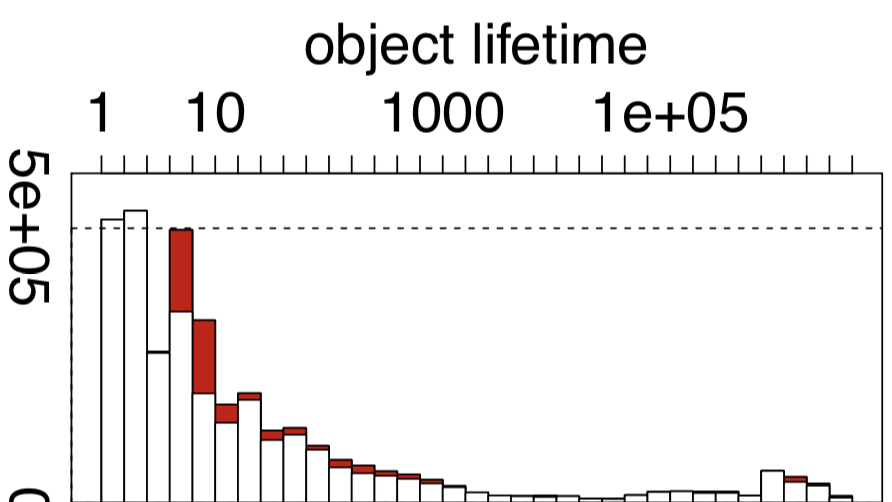

- 00 开篇词 为什么我们要学习Java虚拟机？.md.html
- 01 Java代码是怎么运行的？.md.html
- 02 Java的基本类型.md.html
- 03 Java虚拟机是如何加载Java类的.md.html
- 04 JVM是如何执行方法调用的？（上）.md.html
- 05 JVM是如何执行方法调用的？（下）.md.html
- 06 JVM是如何处理异常的？.md.html
- 07 JVM是如何实现反射的？.md.html
- 08 JVM是怎么实现invokedynamic的？（上）.md.html
- 09 JVM是怎么实现invokedynamic的？（下）.md.html
- 10 Java对象的内存布局.md.html
- 11 垃圾回收（上）.md.html
- 12 垃圾回收（下）.md.html
- 13 Java内存模型.md.html
- 14 Java虚拟机是怎么实现synchronized的？.md.html
- 15 Java语法糖与Java编译器.md.html
- 16 即时编译（上）.md.html
- 17 即时编译（下）.md.html
- 18 即时编译器的中间表达形式.md.html
- 19 Java字节码（基础篇）.md.html
- 20 方法内联（上）.md.html
- 21 方法内联（下）.md.html
- 22 HotSpot虚拟机的intrinsic.md.html
- 23 逃逸分析.md.html
- 24 字段访问相关优化.md.html
- 25 循环优化.md.html
- 26 向量化.md.html
- 27 注解处理器.md.html
- 28 基准测试框架JMH（上）.md.html
- 29 基准测试框架JMH（下）.md.html
- 30 Java虚拟机的监控及诊断工具（命令行篇）.md.html
- 31 Java虚拟机的监控及诊断工具（GUI篇）.md.html
- 32 JNI的运行机制.md.html
- 33 Java Agent与字节码注入.md.html
- 34 Graal：用Java编译Java.md.html
- 35 Truffle：语言实现框架.md.html
- 36 SubstrateVM：AOT编译框架.md.html
- 尾声丨道阻且长，努力加餐.html.md.html
- 工具篇 常用工具介绍.md.html
- 捐赠
12 垃圾回收（下）
在读博士的时候，我曾经写过一个统计 Java 对象生命周期的动态分析，并且用它来跑了一些基准测试。
其中一些程序的结果，恰好验证了许多研究人员的假设，即大部分的 Java 对象只存活一小段时间，而存活下来的小部分 Java 对象则会存活很长一段时间。

（pmd 中 Java 对象生命周期的直方图，红色的表示被逃逸分析优化掉的对象）
之所以要提到这个假设，是因为它造就了 Java 虚拟机的分代回收思想。简单来说，就是将堆空间划分为两代，分别叫做新生代和老年代。新生代用来存储新建的对象。当对象存活时间够长时，则将其移动到老年代。
Java 虚拟机可以给不同代使用不同的回收算法。对于新生代，我们猜测大部分的 Java 对象只存活一小段时间，那么便可以频繁地采用耗时较短的垃圾回收算法，让大部分的垃圾都能够在新生代被回收掉。
对于老年代，我们猜测大部分的垃圾已经在新生代中被回收了，而在老年代中的对象有大概率会继续存活。当真正触发针对老年代的回收时，则代表这个假设出错了，或者堆的空间已经耗尽了。
这时候，Java 虚拟机往往需要做一次全堆扫描，耗时也将不计成本。（当然，现代的垃圾回收器都在并发收集的道路上发展，来避免这种全堆扫描的情况。）
今天这一篇我们来关注一下针对新生代的 Minor GC。首先，我们来看看 Java 虚拟机中的堆具体是怎么划分的。
Java 虚拟机的堆划分
前面提到，Java 虚拟机将堆划分为新生代和老年代。其中，新生代又被划分为 Eden 区，以及两个大小相同的 Survivor 区。
默认情况下，Java 虚拟机采取的是一种动态分配的策略（对应 Java 虚拟机参数 -XX:+UsePSAdaptiveSurvivorSizePolicy），根据生成对象的速率，以及 Survivor 区的使用情况动态调整 Eden 区和 Survivor 区的比例。
当然，你也可以通过参数 -XX:SurvivorRatio 来固定这个比例。但是需要注意的是，其中一个 Survivor 区会一直为空，因此比例越低浪费的堆空间将越高。

通常来说，当我们调用 new 指令时，它会在 Eden 区中划出一块作为存储对象的内存。由于堆空间是线程共享的，因此直接在这里边划空间是需要进行同步的。
否则，将有可能出现两个对象共用一段内存的事故。如果你还记得前两篇我用“停车位”打的比方的话，这里就相当于两个司机（线程）同时将车停入同一个停车位，因而发生剐蹭事故。
Java 虚拟机的解决方法是为每个司机预先申请多个停车位，并且只允许该司机停在自己的停车位上。那么当司机的停车位用完了该怎么办呢（假设这个司机代客泊车）？
答案是：再申请多个停车位便可以了。这项技术被称之为 TLAB（Thread Local Allocation Buffer，对应虚拟机参数 -XX:+UseTLAB，默认开启）。
具体来说，每个线程可以向 Java 虚拟机申请一段连续的内存，比如 2048 字节，作为线程私有的 TLAB。
这个操作需要加锁，线程需要维护两个指针（实际上可能更多，但重要也就两个），一个指向 TLAB 中空余内存的起始位置，一个则指向 TLAB 末尾。
接下来的 new 指令，便可以直接通过指针加法（bump the pointer）来实现，即把指向空余内存位置的指针加上所请求的字节数。
我猜测会有留言问为什么不把 bump the pointer 翻译成指针碰撞。这里先解释一下，在英语中我们通常省略了 bump up the pointer 中的 up。在这个上下文中 bump 的含义应为“提高”。另外一个例子是当我们发布软件的新版本时，也会说 bump the version number。
如果加法后空余内存指针的值仍小于或等于指向末尾的指针，则代表分配成功。否则，TLAB 已经没有足够的空间来满足本次新建操作。这个时候，便需要当前线程重新申请新的 TLAB。
当 Eden 区的空间耗尽了怎么办？这个时候 Java 虚拟机便会触发一次 Minor GC，来收集新生代的垃圾。存活下来的对象，则会被送到 Survivor 区。
前面提到，新生代共有两个 Survivor 区，我们分别用 from 和 to 来指代。其中 to 指向的 Survivior 区是空的。
当发生 Minor GC 时，Eden 区和 from 指向的 Survivor 区中的存活对象会被复制到 to 指向的 Survivor 区中，然后交换 from 和 to 指针，以保证下一次 Minor GC 时，to 指向的 Survivor 区还是空的。
Java 虚拟机会记录 Survivor 区中的对象一共被来回复制了几次。如果一个对象被复制的次数为 15（对应虚拟机参数 -XX:+MaxTenuringThreshold），那么该对象将被晋升（promote）至老年代。另外，如果单个 Survivor 区已经被占用了 50%（对应虚拟机参数 -XX:TargetSurvivorRatio），那么较高复制次数的对象也会被晋升至老年代。
总而言之，当发生 Minor GC 时，我们应用了标记 - 复制算法，将 Survivor 区中的老存活对象晋升到老年代，然后将剩下的存活对象和 Eden 区的存活对象复制到另一个 Survivor 区中。理想情况下，Eden 区中的对象基本都死亡了，那么需要复制的数据将非常少，因此采用这种标记 - 复制算法的效果极好。
Minor GC 的另外一个好处是不用对整个堆进行垃圾回收。但是，它却有一个问题，那就是老年代的对象可能引用新生代的对象。也就是说，在标记存活对象的时候，我们需要扫描老年代中的对象。如果该对象拥有对新生代对象的引用，那么这个引用也会被作为 GC Roots。
这样一来，岂不是又做了一次全堆扫描呢？
卡表
HotSpot 给出的解决方案是一项叫做卡表（Card Table）的技术。该技术将整个堆划分为一个个大小为 512 字节的卡，并且维护一个卡表，用来存储每张卡的一个标识位。这个标识位代表对应的卡是否可能存有指向新生代对象的引用。如果可能存在，那么我们就认为这张卡是脏的。
在进行 Minor GC 的时候，我们便可以不用扫描整个老年代，而是在卡表中寻找脏卡，并将脏卡中的对象加入到 Minor GC 的 GC Roots 里。当完成所有脏卡的扫描之后，Java 虚拟机便会将所有脏卡的标识位清零。
由于 Minor GC 伴随着存活对象的复制，而复制需要更新指向该对象的引用。因此，在更新引用的同时，我们又会设置引用所在的卡的标识位。这个时候，我们可以确保脏卡中必定包含指向新生代对象的引用。
在 Minor GC 之前，我们并不能确保脏卡中包含指向新生代对象的引用。其原因和如何设置卡的标识位有关。
首先，如果想要保证每个可能有指向新生代对象引用的卡都被标记为脏卡，那么 Java 虚拟机需要截获每个引用型实例变量的写操作，并作出对应的写标识位操作。
这个操作在解释执行器中比较容易实现。但是在即时编译器生成的机器码中，则需要插入额外的逻辑。这也就是所谓的写屏障（write barrier，注意不要和 volatile 字段的写屏障混淆）。
写屏障需要尽可能地保持简洁。这是因为我们并不希望在每条引用型实例变量的写指令后跟着一大串注入的指令。
因此，写屏障并不会判断更新后的引用是否指向新生代中的对象，而是宁可错杀，不可放过，一律当成可能指向新生代对象的引用。
这么一来，写屏障便可精简为下面的伪代码 [1]。这里右移 9 位相当于除以 512，Java 虚拟机便是通过这种方式来从地址映射到卡表中的索引的。最终，这段代码会被编译成一条移位指令和一条存储指令。
CARD_TABLE [this address >> 9] = DIRTY;
虽然写屏障不可避免地带来一些开销，但是它能够加大 Minor GC 的吞吐率（ 应用运行时间 /(应用运行时间 + 垃圾回收时间) ）。总的来说还是值得的。不过，在高并发环境下，写屏障又带来了虚共享（false sharing）问题 [2]。
在介绍对象内存布局中我曾提到虚共享问题，讲的是几个 volatile 字段出现在同一缓存行里造成的虚共享。这里的虚共享则是卡表中不同卡的标识位之间的虚共享问题。
在 HotSpot 中，卡表是通过 byte 数组来实现的。对于一个 64 字节的缓存行来说，如果用它来加载部分卡表，那么它将对应 64 张卡，也就是 32KB 的内存。
如果同时有两个 Java 线程，在这 32KB 内存中进行引用更新操作，那么也将造成存储卡表的同一部分的缓存行的写回、无效化或者同步操作，因而间接影响程序性能。
为此，HotSpot 引入了一个新的参数 -XX:+UseCondCardMark，来尽量减少写卡表的操作。其伪代码如下所示：
if (CARD_TABLE [this address >> 9] != DIRTY)
CARD_TABLE [this address >> 9] = DIRTY;
总结与实践
今天我介绍了 Java 虚拟机中垃圾回收具体实现的一些通用知识。
Java 虚拟机将堆分为新生代和老年代，并且对不同代采用不同的垃圾回收算法。其中，新生代分为 Eden 区和两个大小一致的 Survivor 区，并且其中一个 Survivor 区是空的。
在只针对新生代的 Minor GC 中，Eden 区和非空 Survivor 区的存活对象会被复制到空的 Survivor 区中，当 Survivor 区中的存活对象复制次数超过一定数值时，它将被晋升至老年代。
因为 Minor GC 只针对新生代进行垃圾回收，所以在枚举 GC Roots 的时候，它需要考虑从老年代到新生代的引用。为了避免扫描整个老年代，Java 虚拟机引入了名为卡表的技术，大致地标出可能存在老年代到新生代引用的内存区域。
由于篇幅的原因，我没有讲解 Java 虚拟机中具体的垃圾回收器。我在文章的末尾附了一段简单的介绍，如果你有兴趣的话可以参阅一下。
今天的实践环节，我们来看看 Java 对象的生命周期对垃圾回收的影响。
前面提到，Java 虚拟机的分代垃圾回收是基于大部分对象只存活一小段时间，小部分对象却存活一大段时间的假设的。
然而，现实情况中并非每个程序都符合前面提到的假设。如果一个程序拥有中等生命周期的对象，并且刚移动到老年代便不再使用，那么将给默认的垃圾回收策略造成极大的麻烦。
下面这段程序将生成 64G 的 Java 对象。并且，我通过 ALIVE_OBJECT_SIZE 这一变量来定义同时存活的 Java 对象的大小。这也是一种对于垃圾回收器来说比较直观的生命周期。
当我们使用 Java 8 的默认 GC，并且将新生代的空间限制在 100M 时，试着估算当 ALIVE_OBJECT_SIZE 为多少时，这段程序不会触发 Full GC（提示一下，如果 Survivor 区没法存储所有存活对象，将发生什么。）。实际运行情况又是怎么样的？
// Run with java -XX:+PrintGC -Xmn100M -XX:PretenureSizeThreshold=10000 LifetimeTest
// You may also try with -XX:+PrintHeapAtGC，-XX:-UsePSAdaptiveSurvivorSizePolicy or -XX:SurvivorRatio=N
public class LifetimeTest {
private static final int K = 1024;
private static final int M = K * K;
private static final int G = K * M;
private static final int ALIVE_OBJECT_SIZE = 32 * M;
public static void main(String[] args) {
int length = ALIVE_OBJECT_SIZE / 64;
ObjectOf64Bytes[] array = new ObjectOf64Bytes[length];
for (long i = 0; i < G; i++) {
array[(int) (i % length)] = new ObjectOf64Bytes();
}
}
}
class ObjectOf64Bytes {
long placeholder0;
long placeholder1;
long placeholder2;
long placeholder3;
long placeholder4;
long placeholder5;
}
附录：Java 虚拟机中的垃圾回收器
针对新生代的垃圾回收器共有三个：Serial，Parallel Scavenge 和 Parallel New。这三个采用的都是标记 - 复制算法。其中，Serial 是一个单线程的，Parallel New 可以看成 Serial 的多线程版本。Parallel Scavenge 和 Parallel New 类似，但更加注重吞吐率。此外，Parallel Scavenge 不能与 CMS 一起使用。
针对老年代的垃圾回收器也有三个：刚刚提到的 Serial Old 和 Parallel Old，以及 CMS。Serial Old 和 Parallel Old 都是标记 - 压缩算法。同样，前者是单线程的，而后者可以看成前者的多线程版本。
CMS 采用的是标记 - 清除算法，并且是并发的。除了少数几个操作需要 Stop-the-world 之外，它可以在应用程序运行过程中进行垃圾回收。在并发收集失败的情况下，Java 虚拟机会使用其他两个压缩型垃圾回收器进行一次垃圾回收。由于 G1 的出现，CMS 在 Java 9 中已被废弃 [3]。
G1（Garbage First）是一个横跨新生代和老年代的垃圾回收器。实际上，它已经打乱了前面所说的堆结构，直接将堆分成极其多个区域。每个区域都可以充当 Eden 区、Survivor 区或者老年代中的一个。它采用的是标记 - 压缩算法，而且和 CMS 一样都能够在应用程序运行过程中并发地进行垃圾回收。
G1 能够针对每个细分的区域来进行垃圾回收。在选择进行垃圾回收的区域时，它会优先回收死亡对象较多的区域。这也是 G1 名字的由来。
即将到来的 Java 11 引入了 ZGC，宣称暂停时间不超过 10ms。如果你感兴趣的话，可参考 R 大的这篇文章 [4]。
http://psy-lob-saw.blogspot.com/2014/10/the-jvm-write-barrier-card-marking.html https://blogs.oracle.com/dave/false-sharing-induced-by-card-table-marking http://openjdk.java.net/jeps/291 https://www.zhihu.com/question/287945354/answer/458761494
© 2019 - 2023 Liangliang Lee. Powered by gin and hexo-theme-book.